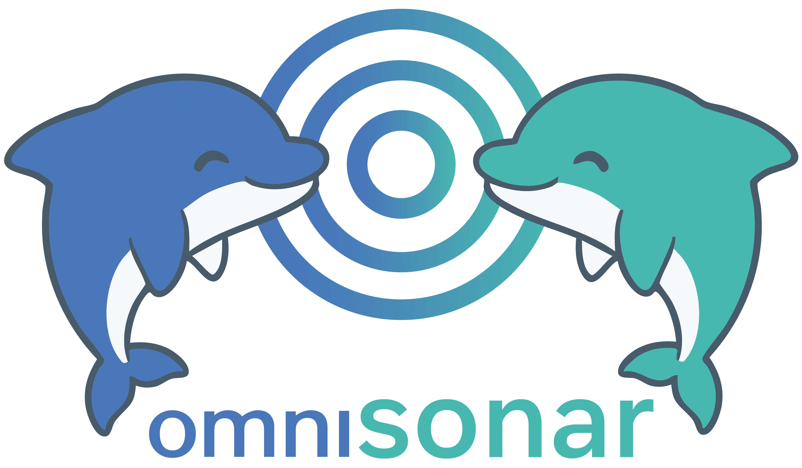
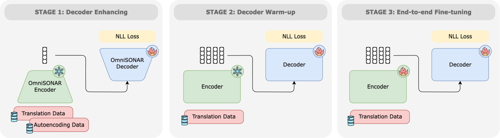
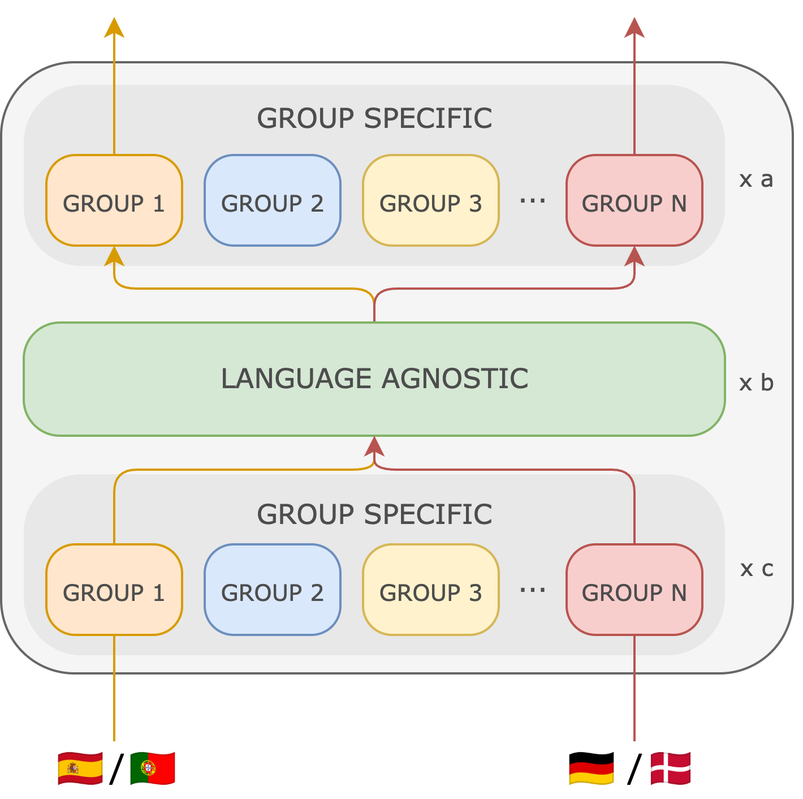
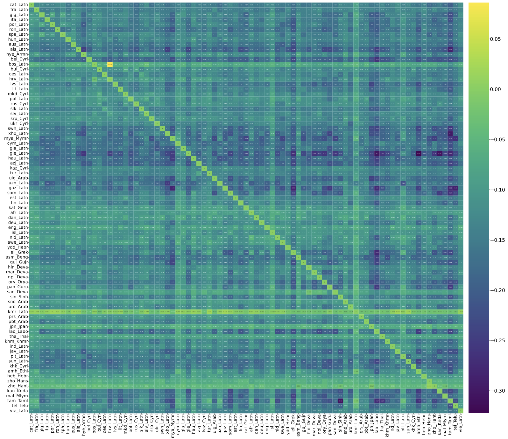
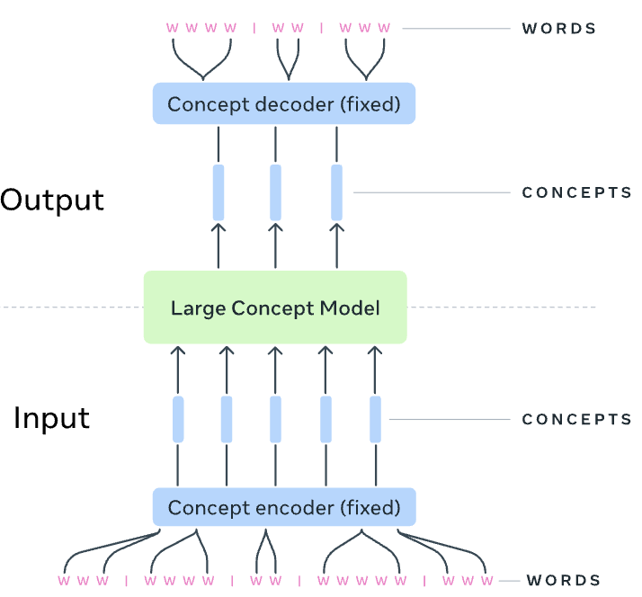
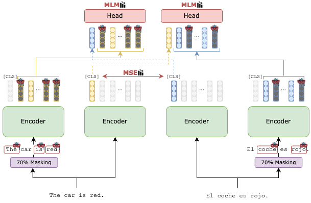
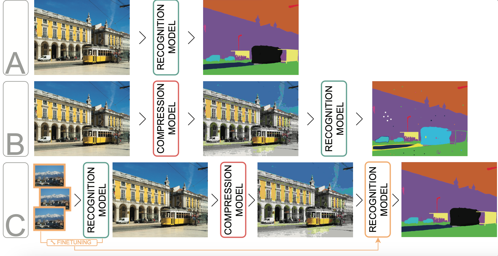

I'm a PhD student at Meta and Sorbonne University, working on multimodal multilingual research.
I'm a PhD student at Meta and Sorbonne University, working on multimodal multilingual research.

Cross-lingual sentence encoders typically cover only a few hundred languages and often trade downstream quality for stronger alignment, limiting their adoption. We introduce OmniSONAR, a new family of omnilingual, cross-lingual and cross-modal sentence embedding models that natively embed text, speech, code, and mathematical expressions in a single semantic space, while delivering state-of-the-art downstream performance at the scale of thousands of languages, from high-resource to extremely low-resource varieties. To reach this scale without representation collapse, we use progressive training. We first learn a strong foundational space for 200 languages with an LLM-initialized encoder-decoder, combining token-level decoding with a novel split-softmax contrastive loss and synthetic hard negatives. Building on this foundation, we expand to several thousands language varieties via a two-stage teacher-student encoder distillation framework. Finally, we demonstrate the cross-modal extensibility of this space by seamlessly mapping 177 spoken languages into it. OmniSONAR halves cross-lingual similarity search error on the 200-language FLORES dataset and reduces error by a factor of 15 on the 1,560-language BIBLE benchmark. It also enables strong translation, outperforming NLLB-3B on multilingual benchmarks and exceeding prior models (including much larger LLMs) by 15 chrF++ points on 1,560 languages into English BIBLE translation. OmniSONAR also performs strongly on MTEB and XLCoST. For speech, OmniSONAR achieves a 43% lower similarity-search error and reaches 97% of SeamlessM4T speech-to-text quality, despite being zero-shot for translation (trained only on ASR data). Finally, by training an encoder-decoder LM, Spectrum, exclusively on English text processing OmniSONAR embedding sequences, we unlock high-performance transfer to thousands of languages and speech for complex downstream tasks.

High-quality machine translation (MT) can scale to hundreds of languages, setting a high bar for multilingual systems. However, compared to the world's 7,000 languages, current systems still offer only limited coverage: about 200 languages on the target side, and maybe a few hundreds more on the source side, supported due to cross-lingual transfer. And even these numbers have been hard to evaluate due to the lack of reliable benchmarks and metrics. We present Omnilingual Machine Translation (OMT), the first MT system supporting more than 1,600 languages. This scale is enabled by a comprehensive data strategy that integrates large public multilingual corpora with newly created datasets, including manually curated MeDLEY bitext. We explore two ways of specializing a Large Language model (LLM) for machine translation: as a decoder-only model (OMT-LLaMA) or as a module in an encoder-decoder architecture (OMT-NLLB). Notably, all our 1B to 8B parameter models match or exceed the MT performance of a 70B LLM baseline, revealing a clear specialization advantage and enabling strong translation quality in low-compute settings. Moreover, our evaluation of English-to-1,600 translations further shows that while baseline models can interpret undersupported languages, they frequently fail to generate them with meaningful fidelity; OMT-LLaMA models substantially expand the set of languages for which coherent generation is feasible. Additionally, OMT models improve in cross-lingual transfer, being close to solving the "understanding" part of the puzzle in MT for the 1,600 evaluated. Our leaderboard and main human-created evaluation datasets (BOUQuET and Met-BOUQuET) are dynamically evolving towards Omnilinguality and freely available.

We propose Mixture of Languages (MoL), a new strategy to pretrain largely multilingual encoders. Recent work in this field has relied on training transformer encoders on a large amount of multilingual data, with all parameters shared across all languages, without studying how to optimally balance language synergy and interference to achieve better performance. To address this, MoL proposes to group languages based on their similarity, and add parallel, sparsely activated layers that process each group independently. This architecture allows MoL to boost language transfer while minimizing interference, without increasing the active parameter count. We show that MoL largely outperforms a dense counterpart trained with the same configuration, as well as MoE models and public multilingual encoders such as XLM-R or mBERT on downstream tasks.

In this paper we present a comprehensive study of language interference in encoder-only Transformer models across 83 languages. We construct an interference matrix by training and evaluating small BERT-like models on all possible language pairs, providing a large-scale quantification of cross-lingual interference. Our analysis reveals that interference patterns do not align with traditional linguistic similarities such as language family, nor with proxies like embedding similarity or token overlap. Furthermore, we demonstrate that the interference matrix effectively predicts multilingual model performance on downstream tasks.

LLMs have revolutionized the field of artificial intelligence and have emerged as the de-facto tool for many tasks. The current established technology of LLMs is to process input and generate output at the token level. This is in sharp contrast to humans who operate at multiple levels of abstraction, well beyond single words, to analyze information and to generate creative content. In this paper, we present an attempt at an architecture which operates on an explicit higher-level semantic representation, which we name a concept. Concepts are language- and modality-agnostic and represent a higher level idea or action in a flow. Hence, we build a "Large Concept Model". In this study, as proof of feasibility, we assume that a concept corresponds to a sentence, and use an existing sentence embedding space, SONAR, which supports up to 200 languages in both text and speech modalities. The Large Concept Model is trained to perform autoregressive sentence prediction in an embedding space. We explore multiple approaches, namely MSE regression, variants of diffusion-based generation, and models operating in a quantized SONAR space. These explorations are performed using 1.6B parameter models and training data in the order of 1.3T tokens. We then scale one architecture to a model size of 7B parameters and training data of about 2.7T tokens. We perform an experimental evaluation on several generative tasks, namely summarization and a new task of summary expansion. Finally, we show that our model exhibits impressive zero-shot generalization performance to many languages, outperforming existing LLMs of the same size. The training code of our models is freely available.

Current pre-trained cross-lingual sentence encoders approaches use sentence-level objectives only. This can lead to loss of information, especially for tokens, which then degrades the sentence representation. We propose MEXMA, a novel approach that integrates both sentence-level and token-level objectives. The sentence representation in one language is used to predict masked tokens in another language, with both the sentence representation and all tokens directly updating the encoder. We show that adding token-level objectives greatly improves the sentence representation quality across several tasks. Our approach outperforms current pre-trained cross-lingual sentence encoders on bi-text mining as well as several downstream tasks. We also analyse the information encoded in our tokens, and how the sentence representation is built from them.

Reducing the data footprint of visual content via image compression is essential to reduce storage requirements, but also to reduce the bandwidth and latency requirements for transmission. In particular, the use of compressed images allows for faster transfer of data, and faster response times for visual recognition in edge devices that rely on cloud-based services. In this paper, we first analyze the impact of image compression using traditional codecs, as well as recent state-of-the-art neural compression approaches, on three visual recognition tasks: image classification, object detection, and semantic segmentation. We consider a wide range of compression levels, ranging from 0.1 to 2 bits-per-pixel (bpp). We find that for all three tasks, the recognition ability is significantly impacted when using strong compression. For example, for segmentation mIoU is reduced from 44.5 to 30.5 mIoU when compressing to 0.1 bpp using the best compression model we evaluated. Second, we test to what extent this performance drop can be ascribed to a loss of relevant information in the compressed image, or to a lack of generalization of visual recognition models to images with compression artefacts. We find that to a large extent the performance loss is due to the latter: by finetuning the recognition models on compressed training images, most of the performance loss is recovered. For example, bringing segmentation accuracy back up to 42 mIoU, i.e. recovering 82% of the original drop in accuracy.